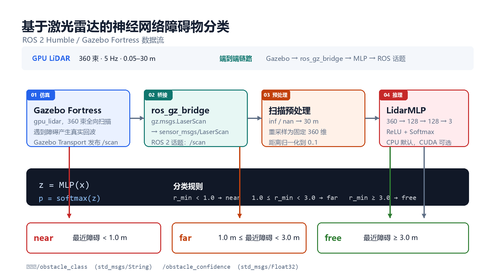
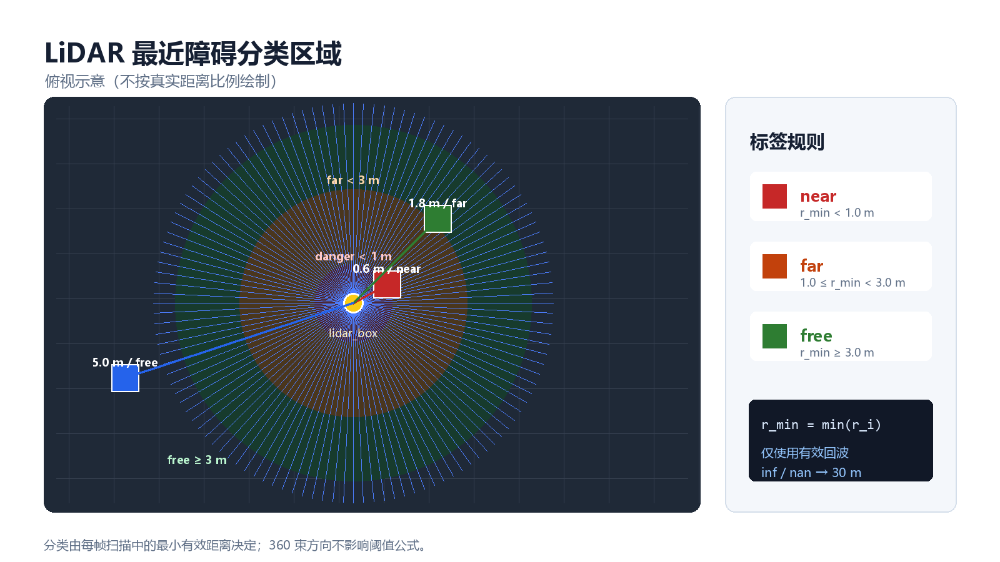
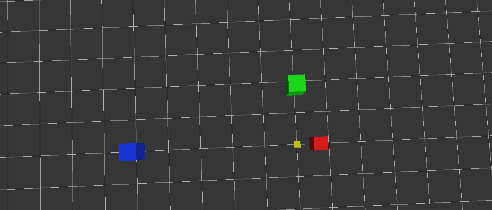
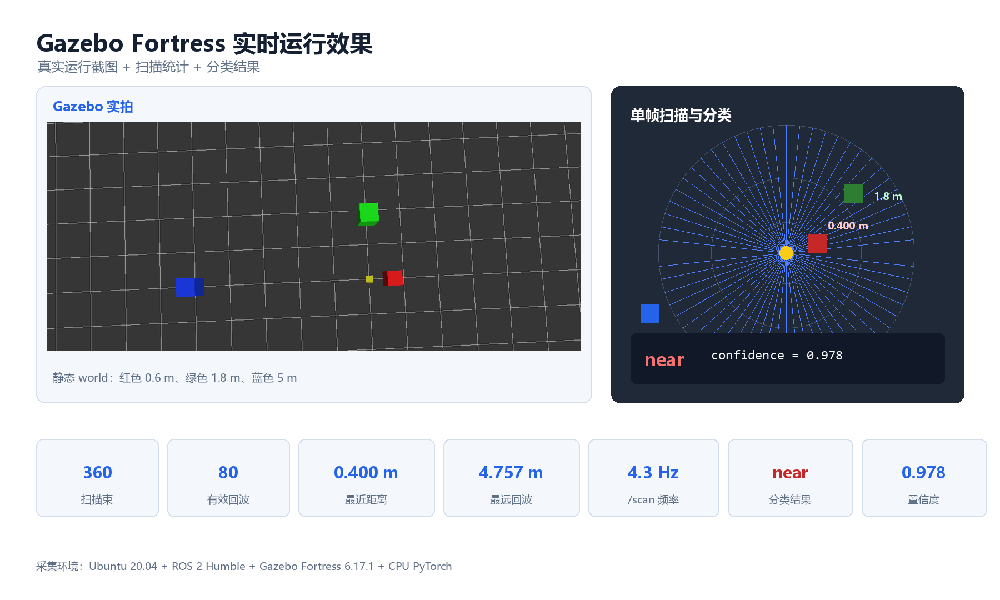

基于激光雷达扫描的神经网络障碍物分类
本文介绍一个基于 ROS 2 Humble、Gazebo Fortress 与 PyTorch 的激光雷达感知模块。模块订阅仿真环境中 2D 激光雷达发布的 /scan（sensor_msgs/LaserScan，360 束），由一个三层 MLP 将每条扫描分为 near（近障）、far（远障）、free（无障）三类，并通过 /obstacle_class、/obstacle_confidence 话题发布分类结果以及置信度。
1. 系统组成

仿真激光雷达生成 360 束 2D 扫描，ros_gz_bridge 把 Gazebo 消息转换为 ROS 2 sensor_msgs/LaserScan，inference_node 加载训练好的 MLP 权重做推理，发布类别字符串和置信度。
2. 环境要求与安装
下表是正式部署目标环境。本次实际复测使用预装 VMware 镜像，环境和结果见第 7 节；该镜像中的 Humble 是手工预装到 /opt/ros/humble 的目录，不受 dpkg 管理，也不是容器或 WSL，不能替代标准 Humble 安装流程。
| 项目 | 版本 |
|---|---|
| 目标操作系统 | Ubuntu 22.04 LTS |
| ROS | ROS 2 Humble (/opt/ros/humble) |
| 目标仿真器 | Gazebo Fortress 6.x（Ignition Gazebo） |
| 目标 Python | 3.10（ROS 2 Humble 自带） |
| GPU（可选） | NVIDIA GPU + CUDA 12.x（纯 CPU 环境完全可用，5070 Ti 等 Blackwell 架构建议直接用 CPU 推理，详见 8.1 节） |
加载 ROS 2 环境并安装 Python 依赖：
source /opt/ros/humble/setup.bash
python3 -m pip install --user -r src/chap5/lidar_obstacle_nn/requirements.txt
纯 CPU 环境（无 NVIDIA 显卡）：PyPI 默认的 torch 即为 CPU 版，上面的命令已经足够，推理节点会自动跳过 CUDA 探测直接使用 CPU。
有 NVIDIA 显卡的环境：按 PyTorch 官网 选与驱动匹配的 CUDA wheel，例如：
python3 -m pip install --user torch --index-url https://download.pytorch.org/whl/cu121
无显示器的机器（服务器/虚拟机/CI）：GPU 激光雷达传感器需要渲染上下文才能产生回波，需安装 xvfb 并用虚拟显示启动（见 6.3 节）：
sudo apt install xvfb
验证安装：
python3 -c "import torch; print(torch.__version__, torch.cuda.is_available())"
# 纯 CPU 机器输出形如 2.3.1+cpu False，属预期且受支持
ros2 pkg prefix ros_gz_sim # 应输出 ROS 2 的安装前缀
3. 计算原理
3.1 激光雷达扫描数据结构
sensor_msgs/LaserScan 是 ROS 2 标准激光雷达消息，关键字段：
| 字段 | 含义 |
|---|---|
angle_min / angle_max |
扫描起止角（弧度） |
angle_increment |
相邻束角间距 |
range_min / range_max |
有效距离范围（米） |
ranges[] |
每束的距离值，inf 表示无回波 |
本模块在 Gazebo SDF 里配置 360 束、2π 弧度、5 Hz、0.05–30 m 量程的水平 2D 激光雷达。
3.2 分类规则与标签
基于扫描中最小有效距离 $r_{\min} = \min_i r_i$（$r_i$ 为第 $i$ 束距离），三分类规则：
阈值默认 $d_{\text{danger}}=1.0\,\text{m}$、$d_{\text{far}}=3.0\,\text{m}$，可在 config/params.yaml 修改。

3.3 神经网络结构
采用三层全连接网络（MLP），输入 360 维（重采样后的扫描向量），输出 3 类 logits：
总参数量 $\approx 360 \times 128 + 128 \times 128 + 128 \times 3 \approx 62{,}272$，权重文件约 249 KB，远低于仓库 3 MB 二进制上限。
3.4 训练目标
交叉熵损失 + Adam 优化器，类均衡加权采样防止小类被忽略：
4. 算法流程
4.1 数据采集（合成）
4.2 数据采集（动态仿真场景）
静态世界（obstacle_world.sdf）里三个障碍物与机器人都是 static，对 360° 雷达而言最近距离恒为 0.4 m，collect_data 静止采集只能得到 near 一类；"旋转机器人"也无济于事——360° 扫描转不转都能同时看到全部障碍。要采到三类均衡的真实仿真数据，需要让障碍物的径向距离本身发生变化。
动态世界 obstacle_world_dynamic.sdf 把唯一的红色障碍块挂在一条水平棱柱关节（prismatic joint）上，由 Gazebo 自带的 JointPositionController 驱动。采集节点在 /obstacle_slider/cmd_pos 上发布关节位置，依次经过 6 个站位（每类两个距离），形成天然均衡且带类内距离变化的数据集：
| 站位 | 关节位置 | 障碍表面距离 | 类别 |
|---|---|---|---|
| 1 / 2 | 0.0 / 0.5 | 0.40 / 0.90 m | near |
| 3 / 4 | 0.8 / 2.1 | 1.20 / 2.50 m | far |
| 5 / 6 | 3.1 / 3.6 | 3.50 / 4.00 m | free |
障碍块半深 0.2 m、关节零位时中心在 0.6 m，因此表面距离 = 关节位置 + 0.4 m。
除了等待运动时间，节点还对每条扫描做距离带校验：标签与当前站位一致、且实测最近距离与该站位期望距离之差不超过 station_tolerance（默认 0.15 m）才入库。这样滑台穿过中间距离时产生的扫描（标签碰巧相同但距离不对）不会污染数据。
4.3 训练
4.4 在线推理
5. 源码解析
| 文件 | 作用 |
|---|---|
lidar_obstacle_nn/model.py |
LidarMLP PyTorch 模块定义。 |
lidar_obstacle_nn/scan_utils.py |
扫描清洗、360 维重采样、标签规则与低置信度 fallback 的共享实现。 |
lidar_obstacle_nn/inference_node.py |
ROS 2 节点，订阅 /scan、加载权重、发布 /obstacle_class。 |
lidar_obstacle_nn/collect_data.py |
订阅 /scan 自动标注采集 .npz；motion_enabled:=true 时驱动动态世界滑台按站位均衡采集。 |
lidar_obstacle_nn/generate_synthetic_dataset.py |
不依赖 Gazebo 直接合成均衡 .npz，本教程默认使用。 |
lidar_obstacle_nn/train_model.py |
训练脚本，含类均衡采样、早停、metrics sidecar。 |
lidar_obstacle_nn/evaluate_model.py |
在带标签 .npz 上评估权重：总体准确率、逐类精确率/召回率、3×3 混淆矩阵。 |
scripts/generate_docs_figures.py |
生成系统数据流、分类区域和真实运行效果图。 |
worlds/obstacle_world.sdf |
静态 Gazebo 场景：1 个 static 机器人 + 3 个不同距离障碍物 + 360 束 GPU LiDAR。 |
worlds/obstacle_world_dynamic.sdf |
动态 Gazebo 场景：1 个障碍块由棱柱关节位置控制器沿导轨驱动，供真实数据采集。 |
launch/main.launch.py |
顶层入口：仿真 + bridge + 推理节点一键启动，支持 world:=static/dynamic。 |
launch/sim.launch.py |
仅启动 Gazebo + bridge；world:=dynamic 时额外桥接滑台位置指令。 |
6. 运行步骤
6.1 构建
source /opt/ros/humble/setup.bash
cd /path/to/ros2_ws # 含本包的 src 的工作空间
colcon build --packages-select lidar_obstacle_nn --symlink-install
source install/setup.bash
构建后运行测试：
colcon test --packages-select lidar_obstacle_nn
colcon test-result --verbose
测试覆盖模型输入输出、inf/nan 清洗、标签边界、合成数据形状与类别均衡、训练产物、LaserScan 风格消息重采样和 fallback，以及 Gazebo/launch 资产检查。
6.2 首次运行前必须先生成模型权重
models/lidar_mlp.pt 权重文件不随仓库分发（仓库 .gitignore 约定忽略 *.pt 二进制训练产物，保持仓库以文本为主），克隆后第一次运行前需要自己训练生成一次（CPU 上约 1 分钟，详见 6.5 节；不训练的话推理节点会打印 Model file not found 警告并使用随机权重，输出无意义）。
6.3 一键启动（推荐）
有显示器的环境：
ros2 launch lidar_obstacle_nn main.launch.py
无显示器的环境（服务器、虚拟机、CI）传入 headless:=true，launch 会通过 xvfb-run 和 Ogre1 软件渲染启动 Gazebo。gpu_lidar 传感器需要渲染上下文才能产生回波；Ogre2 在部分 Xvfb 环境中因缺少 OpenGL 3.3 上下文无法启动：
ros2 launch lidar_obstacle_nn main.launch.py headless:=true
也可以保留原来的外层虚拟显示写法：xvfb-run -a ros2 launch lidar_obstacle_nn main.launch.py。
桌面虚拟机默认使用 render_engine:=ogre，避免软件 OpenGL 环境缺少 OpenGL 3.3 时 Ogre2 崩溃。显卡驱动完整的主机可显式传入 render_engine:=ogre2。
world 已加载 Gazebo 的 VisualizeLidar GUI 插件。选中 lidar_box/lidar_link/gpu_lidar 后即可打开激光射线显示。
main.launch.py 同时启动：
1. Gazebo Fortress 加载 obstacle_world.sdf（加 world:=dynamic 改为加载 obstacle_world_dynamic.sdf）
2. ros_gz_bridge 把 Gazebo /scan 转发到 ROS 2 /scan
3. inference_node 加载 models/lidar_mlp.pt 推理
不要用
ign gazebo -s --headless-rendering：该模式下gpu_lidar没有渲染上下文，360 束全部返回最大量程 30 m（实测见第 7 节对照表），采集与推理都失去意义。
6.4 检查输出
另开终端：
source /opt/ros/humble/setup.bash
source install/setup.bash
ros2 topic list
ros2 topic echo /obstacle_class
ros2 topic echo /obstacle_confidence
ros2 topic hz /scan
6.5 训练自己的模型
# 1. 生成合成数据集（不依赖 Gazebo，三类均衡，本教程默认路径）
python3 -m lidar_obstacle_nn.generate_synthetic_dataset \
--output /tmp/lidar_dataset.npz --num-samples 1500
# 2. 训练
python3 -m lidar_obstacle_nn.train_model \
--dataset /tmp/lidar_dataset.npz \
--output src/chap5/lidar_obstacle_nn/models/lidar_mlp.pt \
--epochs 50
# 3. 重新构建以让新权重进 install
colcon build --packages-select lidar_obstacle_nn --symlink-install
source install/setup.bash
ros2 launch lidar_obstacle_nn main.launch.py
静态世界直接采集只有单一类别：世界里的 lidar_box 是 static、且没有速度/差速控制插件，静止不动时每帧扫描看到同一个最近障碍（实测：默认场景静止时 20/20 帧全为 near）。要采三类均衡的真实数据请使用 6.6 节的动态世界流程；采集同样需要可用的渲染上下文（真实显示器或 xvfb-run -a），否则 /scan 全为最大量程。
6.6 动态场景真实数据采集与评估（进阶）
终端 1，启动动态世界（只起仿真 + 桥接，不起推理节点；无显示器加 xvfb-run -a）：
ros2 launch lidar_obstacle_nn sim.launch.py world:=dynamic
终端 2，自动完成 6 站位采集（默认每站位 150 条，共 900 条，约 4 分钟）：
ros2 run lidar_obstacle_nn collect_data --ros-args \
-p motion_enabled:=true \
-p per_station:=150 \
-p output_path:=/tmp/lidar_real.npz
节点会依次打印各站位的到位与采集进度，结束时输出三类计数（应各为 300）。随后用真实数据训练并用评估脚本对比：
# train_model 内部做 8:2 随机划分并报告验证准确率
python3 -m lidar_obstacle_nn.train_model \
--dataset /tmp/lidar_real.npz \
--output /tmp/lidar_real.pt --epochs 50 --device cpu
# 在任意带标签 .npz 上输出准确率、逐类指标与混淆矩阵
python3 -m lidar_obstacle_nn.evaluate_model \
--model /tmp/lidar_real.pt --dataset /tmp/lidar_real.npz
站位关节位置可通过 joint_positions（double 数组）与 station_labels（int 数组，0/1/2）两个 ROS 参数自定义；两个数组必须等长。
7. 实测结果
以下数据均来自同一台 VMware 预装镜像。该镜像是兼容性验证环境，不是标准 Humble 安装环境：
| 项目 | 实测结果 |
|---|---|
| OS / ROS 版本 | Ubuntu 20.04.6 LTS / ROS 2 Humble（预装兼容性镜像） |
| Python 版本 | 3.8.10 |
| Humble 安装方式 | 手工预装 /opt/ros/humble 目录，不受 dpkg 管理；非容器、非 WSL |
| Gazebo 版本 | Gazebo Fortress 6.17.1 |
| PyTorch 版本 | 2.4.1+cpu |
| 激光雷达 | 360 束 GPU LiDAR，5 Hz，0.05–30 m |
| 模型参数量 | 约 62,272（360→128→128→3） |
| 权重文件大小 | 约 250 KB |
| 数据集规模 | 1500 样本，3 类各 500 条（合成） |
| 训练划分 | 1200 训练 / 300 验证 |
| 训练时长 | 2.02 秒（CPU，50 epoch） |
| 最佳验证损失 | 0.0102 |
| 最终验证准确率 | 100 % |
/scan 发布频率 |
约 4.3 Hz |
/obstacle_class 实测输出 |
near（场景含 0.6 m 红方块） |
/obstacle_confidence 实测输出 |
0.978 |
无头渲染 vs 虚拟显示实测对照（同一世界、同一版本代码）：
| 启动方式 | 360 束中命中障碍数 | 最近距离 | 判定 |
|---|---|---|---|
ign gazebo -r -s --headless-rendering |
0/360（全部 30.00 m） | 30.00 m | free（无回波，数据无效） |
xvfb-run -a + Ogre1 |
80/360 | 0.40 m | near（与场景一致） |
Gazebo 仿真启动后效果：

终端 /obstacle_class 实时输出：

7.1 本次重新验证与图解
本节与前文表格使用同一台 VMware 预装兼容性镜像：Ubuntu 20.04.6、Python 3.8.10、ROS 2 Humble、Gazebo Fortress 6.17.1、PyTorch 2.4.1 CPU。发布频率约 4.3 Hz，360 束中有 80 束产生有效回波，最近距离 0.400 m，分类为 near，置信度 0.978。
Gazebo 静态 world 实际画面：

真实截图、单帧扫描统计和分类结果总览：

7.2 动态世界真实数据采集与合成数据对比
动态世界实测（同一 5 Hz、360 束 GPU LiDAR，6 站位各采 150 帧）：
| 站位 | 指令关节位置 | 实测表面距离 | 命中束数（均值） | 自动标签 |
|---|---|---|---|---|
| 1 / 2 | 0.0 / 0.5 | 0.397 / 0.903 m | 52 / 24 | near |
| 3 / 4 | 0.8 / 2.1 | 1.203 / 2.503 m | 20 / 8 | far |
| 5 / 6 | 3.1 / 3.6 | 3.503 / 4.003 m | 8 / 6 | free |
导轨是纯 visual（无 collision）且位于扫描平面下方（z=0.02 m，波束在 0.11 m），实测不产生回波。
对比实验设置：900 条真实数据按站位分层留出 180 条（每类 60）作为测试集，其余 720 条训练"真实模型"；另用 1500 条合成数据训练"合成模型"。两个模型结构、超参数完全一致，在同一批 180 条真实留出样本上评估：
| 模型 | 总体准确率 | near 召回 | far 召回 | free 召回 |
|---|---|---|---|---|
| 真实数据训练 | 100.0 %（180/180） | 60/60 | 60/60 | 60/60 |
| 合成数据训练 | 83.9 %（151/180） | 60/60 | 31/60 | 60/60 |
合成模型把 29 个 far 样本误判为 free（far 召回仅 51.7 %）：合成数据的障碍是带随机宽度/噪声的理想 wedge，而真实仿真中障碍块几何固定、边缘束返回值与合成分布存在差异。这一差距说明静态合成数据可以验证管线，但在真实传感器分布上的分类能力需要动态采集闭环补齐。
动态世界 Gazebo 场景（红色障碍块 + 灰色导轨 + 黄色 lidar_box）：

两个模型在真实留出集上的评估输出（准确率与混淆矩阵）：

8. 排错
8.1 CUDA 相关报错与回退机制
推理节点默认 use_gpu:=false，直接使用 CPU（MLP 仅 ~50K 参数，CPU 推理亚毫秒级）。显式开启 use_gpu:=true 时的行为与 torch 构建版本有关：
- CUDA 版 torch：节点在第一条
/scan上做一次探测性前向；若失败（RuntimeError，例如显卡计算能力不被当前 wheel 支持——Blackwell sm_120 与 PyTorch 2.5 稳定版 cu121 wheel 即属此列，报错no kernel image is available for execution on the device），自动回退 CPU 并继续运行。 - CPU 版 torch：任何 CUDA 调用会抛
AssertionError: Torch not compiled with CUDA enabled（而非RuntimeError）。节点已在探测前短路（use_gpu为 false 或torch.cuda.is_available()为 False 时完全不触碰 CUDA），并将AssertionError一并纳入捕获，因此 CPU 版 torch 上节点不会崩溃。
8.2 激光雷达扫描不到障碍物
如果 /scan 的 ranges 全是 30.0（最大值，无回波），检查：
- 启动方式：
ign gazebo -s --headless-rendering下gpu_lidar没有渲染上下文，360 束必然全为最大量程（实测见第 7 节对照表）。无显示器环境必须用xvfb-run -a ros2 launch lidar_obstacle_nn main.launch.py。 - 机器人 z 高度：
lidar_box的pose z必须让激光雷达在障碍物高度范围内。SDF 已设z=0.05，激光在z=0.11 m，落在所有障碍物（z=0–0.5 m）之内。 - 机器人是否 static：非 static 物体会受重力影响掉到地面下。SDF 已设
<static>true</static>。 - 激光雷达类型：Gazebo Fortress 用
gpu_lidar（不是ray），需要sensors-system插件，已在 SDF 顶部加载。
8.3 模型权重找不到
inference_node 默认从 get_package_share_directory('lidar_obstacle_nn')/models/lidar_mlp.pt 加载。如果该文件不存在，节点会打印警告 Model file not found 并用随机权重运行（输出几乎无意义）。
解决：训练后重新 colcon build --packages-select lidar_obstacle_nn --symlink-install，确保 install/lidar_obstacle_nn/share/lidar_obstacle_nn/models/lidar_mlp.pt 存在（symlink 指向 src 下的真实文件）。
8.4 动态采集：节点一直 skip，滑台不动
按顺序排查：
- 是否启动了动态世界：动态采集必须用
ros2 launch lidar_obstacle_nn sim.launch.py world:=dynamic。若误用默认静态世界，世界里没有obstacle_slider，指令无人接收，节点会持续打印scans skipped ... wrong world?。用ign model -m obstacle_slider --pose可确认模型是否存在。 - ROS→Gazebo 桥接是否存活：
ros2 topic info /obstacle_slider/cmd_pos应显示 1 个订阅者。注意 SDF 插件默认话题是/model/obstacle_slider/joint/slide_joint/0/cmd_pos，其中/0/是 ROS 2 非法话题名（路径段不允许数字开头），parameter_bridge会直接崩溃；本世界的 SDF 已用<topic>/obstacle_slider/cmd_pos</topic>覆盖，自定义关节名时需保持话题不含数字开头的路径段。 - 残留的 Gazebo 进程：若之前的仿真没关干净，两个服务器会同时向
/scan发布，扫描值在两个场景间交替（表现为最小距离在两个数值间跳变），距离带校验会一直不通过。采集前用ps -eo pid,args | grep "ign gazebo"确认只有一个实例。
8.5 动态采集：站位数据被运动过程污染
长距离移动（如从 4 m 回到 0.4 m）可能在 settle_sec 内没走完，此时标签虽对、距离却不对。节点已用 station_tolerance（默认 0.15 m）距离带拦截这类帧；若仍偶发未走到位，增大 settle_sec（如 6.0 秒）即可。导轨运动较慢时也可同步调大 SDF 关节 velocity 限制。
参考资料
- ROS Index：ros_gz_sim_demos
- Gazebo Fortress lidar sensor 文档
- PyTorch MLP 教程
- sensor_msgs/LaserScan 消息定义
大模型使用声明：本模块的源代码、文档与训练脚本由大语言模型（GLM-5.2）协助生成，作者已逐文件审查并通过实测验证（构建、仿真、采集、训练、推理全流程跑通；其中采集与推理需要可用的图形渲染上下文，无显示器环境使用 xvfb-run -a），对提交内容负全部责任。